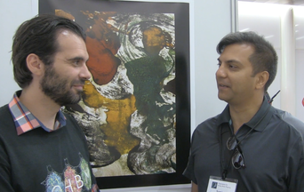

|
BY NIKOLA STIKOV In May 2016, OHBM announced the Open Science Special Interest Group (SIG). One of the SIG founders, Cameron Craddock, wrote an informative blog post about the mission of SIG and its potential. In the post Cameron illustrated the benefits and distinctions of open science by drawing upon the free beer vs. free speech analogy. The OHBM blog team felt that ‘beer vs. speech’ is jargon that needs explaining. Twitter thought otherwise. This made us aware that the open science voices are sometimes difficult to hear outside of their own echo chamber, especially in the noisy world of brain mapping. Cameron removed the reference to speech/beer from his feature, and we agreed to pick up the conversation with Samir Das and Pierre Bellec, two free speech and beer enthusiasts from Montreal. Nikola Stikov: Can you please explain the difference between ‘free as in speech’ and ‘free as in beer’? Nikola and Samir at OHBM 2016 in Geneva Pierre Bellec: The analogy “free beer” and “free speech” comes from the open-source software community. Free as in beer, or “gratis”, means you don’t need to pay to use the software. Free as in speech, or “libre”, means you can re-use freely the software in new projects without direct approval from the authors. Free software is generally both gratis and libre. Samir Das: The “Free” concept is not limited to software. More recently, we have focused on ideas such as Open Science. We are embarking on a new mission at the Montreal Neurological Institute (MNI) to build open science, but defining what 'open science' is can be tricky. The MNI is the first institute to go “Open”. What this means is that the institute won’t worry about patenting ideas and techniques, and will make acquired data freely available to the scientific community at large. NS: So is ‘free as in speech’ always better than ‘free as in beer’? PB: For software, people don’t care that much that it is free as in beer. At the end of the day, if you really want to use a product, you will find a way. The fact that a software is free as in speech, though, has turned out to be incredibly powerful for innovation. Android is based on Linux, a prominent open-source project. Tesla autodrive is also based on Linux. You watch a video on the plane? Linux. Robots going to Mars? Linux. Linux is so robust and so flexible, it blows away anything that a private company could produce. SD: Free doesn’t mean you can’t profit from it. Some people make a lot of money, even though many people still consider it a volunteer service. PB: Exactly, in free software, people work together on projects that are difficult to do alone. But you can still add a layer that is unique, and you can sell the product as a whole. Apple built its OS from unix, they did not reinvent the wheel. NS: Does sharing apply not only to software but also to data? PB: Yes. A paper is not a very reusable unit, it is hard to build on it. There are details missing in your typical manuscript, plus we are an experimental field, and if you don’t have access to the data, there’s not much you can do with [the paper]. So ‘free as in speech’ in the context of science means that instead of sharing just papers, we should also share reusable units. Those units could be code, data, tools, workflows… I believe that hiring and promotion committees should consider all of these units when evaluating somebody’s work. SD: By doing this we will reduce redundancy, waste, cost, because we will have more data available, and governments will spend less money. Even from a self-serving point of view, there is evidence to suggest that if you go open, you might get more collaborators, more citations, more funding, and ways to make money without violating open-science concepts. Finally, this makes it possible for other communities to use the same data in ways that [our] community could never even imagine, so that is very important. NS: Tal Yarkoni published a paper about the next generation platform for science publishing, in which, on top of open-access and data sharing, he recommended preprint archiving and Reddit-like peer review. Do you agree with these recommendations? PB: Open review is exciting, but I have only limited hands-on experience with it. I recently published my name as a reviewer of an opinion piece in Frontiers, then I uploaded my review on Publons.com. Publons is a free website where you can see my entire review history. I definitely enjoyed that process, it is useful to document what generally happens “under the hood”. What I haven’t done yet is take an hour to write a summary of a paper where I wasn’t a reviewer. I want to try that out in the future. SD: This is the future for sure, but I am not entirely sure about every nuance and the exact details of the outcome. I don’t have a strong opinion about post-publication peer-review, but if that is possible, I suppose it is a good thing. More transparency can help with the current reproducibility crisis in research. However, when it comes to preprint archiving, I feel like there is something to be said about due process. When we collect data for a study, sometimes it doesn’t make sense to release it immediately; we are not done yet. Little embargos so you can finish your planned work might be in order. I am for a reasonable amount of process. NS: So when should the sharing happen? PB: I fully agree with Samir, I don’t think it is realistic today to tell people that everybody should share their data as soon as it is collected. Because you are going to scare people. At the end of the day, I believe in most cases embargos are not useful, and that ten years down the road few people will still use them. SD: If [the data] is organized while you are collecting it, with proper standards, then it won’t be so much work to share it in a few years. One problem is that a lot of this work is currently done by contract researchers that are not faculty, and there is no long-term career path for them in academia. You get a grant for a couple of years, and then everybody scatters, or they go to industry. Universities need to shape up and do more. The current model is extremely wasteful and contrary to the mission of science - it takes a fair bit of time to train people, and losing the great amount of knowledge acquired is particularly harmful to the research ecosystem. Pierre Bellec is a professor of computer science at the University of Montreal and CRIUGM, where he develops fMRI connectivity biomarkers for Alzheimer's disease. He currently chairs the OHBM Open Science Special Interest Group, and is also involved in organizing the OHBM Hackathon. Nikola: A word or two about the Open Science SIG activities. Pierre, you are one of the organizers of the NeuroBureau hackathons, what do you do there? PB: At the beginning [of a hackathon], people pitch projects, little teams are formed, and then people sit down and work. The idea is to take those 5 minutes during conferences, when you meet somebody, you have a coffee, you have an exciting idea but you need to go back to the talks. So the idea is to take that little chunk of time and stretch it to the length of the conference. NS: Do you need to know how to code to be at a hackathon? PB: That is a common misconception. The hackathons come from the tech community initially, so people associate them with coding, but we try to gather a different kind of community, and we see all kinds of people coming to the hackathon and having a great time. Samir Das is the Software Manager for the McGill Centre of Integrative Neuroscience, and system architect for the LORIS database. His goal is to facilitate technological solutions towards difficult data management and processing problems in neuroscience and beyond. NS: Samir, what is your role at OHBM?
SD: So, I wear a lot of different hats in my life, but at OHBM, I consider myself Pierre Bellec’s sidekick. The point of it is that we are all trying to further a common goal, to do things like open science and data sharing. NS: And as part of that you organize parties. SD: I know it sounds weird to say that parties are part of the open science mission, but communication and collaboration [are facilitated by] social events, whether at a hackathon level, or at a big party. It is amazing how much stuff can be solved over a beer. NS: The next meeting is in Vancouver, have you already planned the venue? SD: I haven’t thought that far ahead, but I already have an idea of how it could be. I am picturing a beach... I feel like that will facilitate even more science. :) Thanks to Sarabeth Fox for video recording.
0 Comments
Your comment will be posted after it is approved.
Leave a Reply. |
BLOG HOME
Archives
October 2022
|
 RSS Feed
RSS Feed